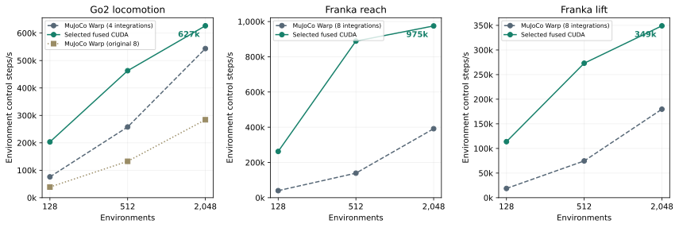
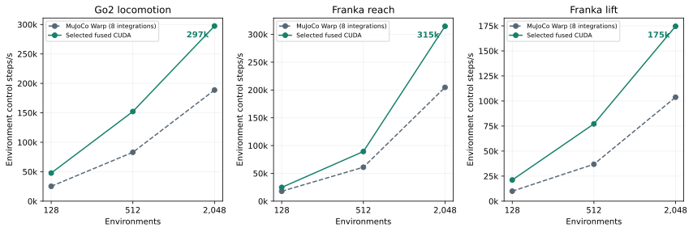
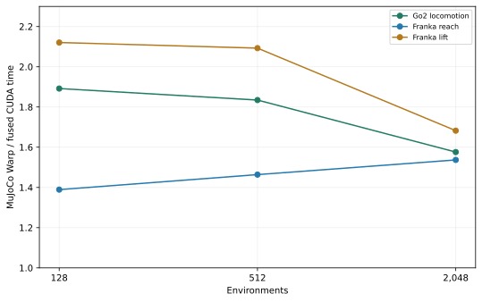
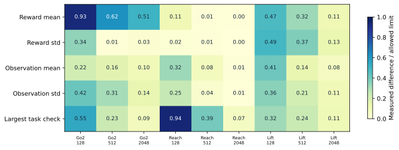

Task-specific CUDA physics in Isaac Lab
NVIDIA L4 · Final measurements · 4 November 2026
At 2,048 environments, the selected CUDA implementations reach 627k Go2, 975k reach and 349k lift environment-steps/s for physics alone. Including Isaac Lab gives 297k, 315k and 175k steps/s. All nine selected behavioral comparisons pass; aggressive lift remains separate because its object-family outcomes differ.
Throughput: environment-steps per second
Steps/s = environments × 1,000 / milliseconds per control step, derived from the existing timing medians. This counts environment control steps, with no extra substep multiplier. Physics-only excludes actions, explicit actuator updates, sensors, observations, rewards, resets and task managers.
Physics-only

End-to-end, including Isaac Lab

Speedups and the G1 comparison
Matched integration counts


Original end-to-end integration counts


The purple curve is measured G1 / Nabla on this L4: 4.95× at 512 and 4.08× at 2,048 environments, the shared batch sizes. No G1 point exists at 128. The gray band is the published RTX PRO 6000 Blackwell range across 512–16,384 environments, not a confidence interval.
Exact final timings and executed physics kernel counts
Go2 advances 20 ms per control; Franka advances 33.333 ms. R8/r10/r9 are selected; lift r11 is aggressive. Matched four-integration native runs are timing controls whose task behavior has not been revalidated. Counts include executed solver-loop repetitions and helpers, excluding copies and memset; parentheses show the range.
| Task / variant | Environments | Integrations (matched) | Physics MJW ms | Physics CUDA ms | MJW physics kernels | CUDA physics kernels | Physics MJW ms (original 8) | MJW kernels (original 8) | End-to-end MJW ms | End-to-end CUDA ms |
|---|---|---|---|---|---|---|---|---|---|---|
| go2 r8 | 128 | 4 | 1.685 | 0.630 | 491.7 (488–499) | 4 | 3.294 | 965.0 | 5.069 | 2.680 |
| go2 r8 | 512 | 4 | 1.986 | 1.106 | 533.0 (522–544) | 4 | 3.860 | 1044.0 | 6.172 | 3.364 |
| go2 r8 | 2048 | 4 | 3.768 | 3.268 | 558.7 (544–566) | 4 | 7.209 | 1073.3 | 10.853 | 6.887 |
| reach r10 | 128 | 8 | 3.204 | 0.487 | 972 | 1 | 3.204 | 972.0 | 7.173 | 5.164 |
| reach r10 | 512 | 8 | 3.675 | 0.576 | 979.3 (972–983) | 1 | 3.675 | 979.3 | 8.388 | 5.730 |
| reach r10 | 2048 | 8 | 5.229 | 2.101 | 1005.0 (972–1027) | 1 | 5.229 | 1005.0 | 10.003 | 6.509 |
| lift r9 | 128 | 8 | 6.824 | 1.125 | 1201.0 (1190–1212) | 4 | 6.824 | 1201.0 | 12.819 | 6.045 |
| lift r9 | 512 | 8 | 6.858 | 1.875 | 1290.3 (1269–1313) | 4 | 6.858 | 1290.3 | 13.886 | 6.636 |
| lift r9 | 2048 | 8 | 11.393 | 5.868 | 1316.7 (1247–1368) | 4 | 11.393 | 1316.7 | 19.731 | 11.729 |
| lift r11 | 128 | 4 | 3.383 | 0.498 | 628.0 (617–650) | 1 | 6.819 | 1201.0 | 12.819 | 6.092 |
| lift r11 | 512 | 4 | 3.478 | 0.754 | 651.0 (629–673) | 1 | 6.782 | 1272.7 | 13.886 | 6.618 |
| lift r11 | 2048 | 4 | 5.913 | 2.392 | 684.0 (651–706) | 1 | 11.569 | 1349.7 | 19.731 | 8.008 |
G1 measurements and comparison limits
| G1 source / GPU | Environments | MJW ms/control | Nabla ms/control | MJW / Nabla |
|---|---|---|---|---|
| Measured / L4 | 256 | 3.580 | 0.700 | 5.12× |
| Measured / L4 | 512 | 4.201 | 0.849 | 4.95× |
| Measured / L4 | 1,024 | 5.653 | 1.276 | 4.43× |
| Measured / L4 | 2,048 | 9.166 | 2.246 | 4.08× |
| Measured / L4 | 4,096 | 18.027 | 4.622 | 3.90× |
| Measured / L4 | 8,192 | 36.043 | 9.694 | 3.72× |
| Published / RTX PRO 6000 | 512 | 3.771 | 0.609 | 6.19× |
| Published / RTX PRO 6000 | 1,024 | 4.095 | 0.723 | 5.66× |
| Published / RTX PRO 6000 | 4,096 | 6.149 | 1.201 | 5.12× |
| Published / RTX PRO 6000 | 16,384 | 15.965 | 3.962 | 4.03× |
The measured G1 sweep uses the mf_s0 corpus with matched capacity, four 5 ms integrations and a Newton cap of ten. Nabla executes eight kernels per control. Local native traces counted 706 kernels at 256 environments and 784 at 4,096; the published RTX sweep gives no native counts.
G1 uses MuJoCo 3.17 / Warp 1.18; the task experiments use 3.15 / 1.17. G1’s native graph includes corpus-reset copies, while the task timings exclude restoration. Models and published hardware also differ. Six of 4,096 G1 corpus worlds had relative velocity errors above 10−4, with a maximum of 11.1%, so full numerical equivalence was not established.
Physics-only measurement method
Seed-42 baseline action replay supplies state batches after controls 16, 64 and 111. Each engine starts with the same state, prepared controls, applied forces and acceleration warm start. Randomized parameters and lift difficulty 10 are retained; prepared inputs remain fixed during timing. Implicit actuator dynamics remain inside the solver.
The native graph calls collision detection and SolverMuJoCo.step, including its conversions; CUDA calls the selected compiled step and intrinsic state/contact export. State restoration, compilation, allocation and capture are untimed. Each pair warms up for at least 0.5 s, discards one round and retains five rounds of 48 replays. The reported time is the median of five means, each weighting the three state batches equally. Counts use 15 separate profiler replays.
Generated CUDA hashes match the end-to-end implementations. State/control hashes match between timing and profiling. All sampled outputs are finite with zero solver error flags. At 2,048 Go2 environments, independently initialized derived solver parameters differed by less than 0.001%; randomized physical parameters matched exactly.
End-to-end speedups

End-to-end method and software
Timing resets to seed 42, warms up for 16 controls and replays 96 environment steps. One round is discarded; five retained means yield the median. The task stack uses MuJoCo/MuJoCo Warp 3.15.0, Warp 1.17.0, Torch 2.11.0, Newton 1.8.0.dev0 and Isaac Lab 42.1.0, on NVIDIA L4 and AMD EPYC 7R13. Isaac Lab revision 8d5517818ae44640c89d40cf5470f40892a47c7a is unmodified. Compilation uses nvcc 12.9, sm_89 and fast single precision.
Standard-evaluation rollouts
Each clip shows the first ten seconds continuously at simulation speed, rendered from recorded fused-engine poses and authored collision geometry. Controllers, gravity and seed 42 are unchanged; all three 128-world runs recorded zero physics error flags. These are illustrations, separate from timing.
How the fused step is built
One warp owns each world; lanes share dynamics, Jacobian and solver work. Fixed topology, geometry pairs and immutable values are compiled into CUDA. Only randomized parameters remain in a per-world pack, with reset-time audits for changes to baked values.
The hot path replaces general MuJoCo Warp state and work arrays with fixed-size Data, Work and Solve structures in shared memory. Scratch storage is reused between stages. Intermediate state exports and unused implicit-actuator torque telemetry are omitted. Full mass coupling, bias and contact solves remain in the selected implementations; only aggressive lift drops mass off-diagonals and velocity-dependent bias.
- Go2 r8 keeps full dynamics and contact geometry, packs only ancestor Jacobian entries, and uses four integrations with expanded 16-contact / 64-row capacity.
- Reach r10 retains all nine DOFs, finger equality and collision pairs, with eight integrations in one launch.
- Lift r9 removes the static table’s dynamic coordinates (21 to 15 velocity DOFs) and replaces object meshes with authored boxes, sphere and capsules. Original mass and inertia remain; eight integrations run in four launches.
- Aggressive lift r11 adds diagonal inertia, gravity-only bias and four integrations in one launch.
| Source component | Role |
|---|---|
compact.py, task_specs.py | Extract model constants, pack randomized parameters and connect the CUDA entry point to Newton state and control buffers. |
build_kernel.py, full_reach.py | Assemble the specialized source and fixed-size layouts; preserve the full nine-DOF reach model. |
physics_core.cuh | Kinematics, articulated mass and bias, actuator forces, constraint assembly, Newton solve and integration. |
collision.cuh, analytic_proxy.cuh | Original collision routines and lift’s analytic object-shape routines. |
direct_io.cuh, launch.cuh | Import/export Newton state and contacts; own shared storage and loop over internal integrations. |
Generated go2_*.cu, reach_*.cu, lift_*.cu | Compile the selected variant into a CUDA kernel for sm_89 with fast single-precision arithmetic. |
Short code excerpts
Reach r10 assigns one shared-memory slice to each warp. The following excerpt expands the original compact formatting:
extern __shared__ __align__(16) unsigned char storage[];
Shared &mem = ((Shared*)storage)[threadIdx.x / 32];
Work &s = mem.s; Solve &v = mem.v; Data &dd = mem.d;
int w = blockIdx.x * WORLDS_PER_BLOCK + threadIdx.x / 32;
int l = threadIdx.x & 31;
if (w >= NWORLDS) return;The core loop retains state through eight integrations. prepare recomputes dynamics, contacts and constraints each time. The final flag enables boundary exports; diagnostics are omitted here.
for (int sub = 0; sub < INTERNAL_STEPS; ++sub) {
prepare(dd, s, w, l, v.H, v.p);
__syncwarp();
solve_integrate(dd, s, v, w, l, io,
sub == INTERNAL_STEPS - 1);
__syncwarp();
}The measurement harness restores the sampled state before the start event:
wp.capture_launch(reset)
wp.record_event(first)
wp.capture_launch(graph)
wp.record_event(last)Selected model dimensions and per-world storage
| Task | Variant | Coordinates | Dense DOFs | Bodies | Pairs | Randomized parameter bytes/world | Local state bytes/world | Work scratch bytes/world | Solver scratch bytes/world |
|---|---|---|---|---|---|---|---|---|---|
| Go2 locomotion | r8 | 19 | 18 | 20 | 27 | 380 | 792 | 12272 | 2556 |
| Franka reach | r10 | 9 | 9 | 12 | 26 | 184 | 544 | 7244 | 1476 |
| Franka lift | r9 | 16 | 15 | 14 | 39 | 504 | 720 | 11788 | 2380 |
State and workspaces reside in shared memory during a launch. Compiler local storage, constant reads and state/contact exports still contribute memory traffic.
The reproducible code package is private. It contains the pinned Nabla upstream history, independent CUDA snapshots, build glue, benchmarks and video scripts. Its private repository link is omitted under this site’s publication rules.
Behavioral validation
All nine selected comparisons pass. Validation uses 1,000 Go2 controls and 600 Franka controls with the standard controllers and seed 42. State, observations and rewards remain finite with zero persistent solver errors. Original interfaces, rewards, randomization, control rates and episode durations are retained.

Exact aggregate behavioral checks
| Selected task | N | Reward mean difference | Reward std difference | Observation mean RMS | Observation std RMS | Task metric | Baseline → selected | All checks |
|---|---|---|---|---|---|---|---|---|
| Go2 locomotion | 128 | 0.0931 | 0.0688 | 0.0326 | 0.0831 | velocity_error | 0.1198 → 0.1290 | Pass |
| Go2 locomotion | 512 | 0.0624 | 0.0027 | 0.0241 | 0.0613 | velocity_error | 0.1229 → 0.1292 | Pass |
| Go2 locomotion | 2048 | 0.0508 | 0.0057 | 0.0156 | 0.0286 | velocity_error | 0.1249 → 0.1313 | Pass |
| Franka reach | 128 | 0.0112 | 0.0035 | 0.0481 | 0.0500 | position_error | 0.0989 → 0.0981 | Pass |
| Franka reach | 512 | 0.0011 | 0.0022 | 0.0127 | 0.0083 | position_error | 0.0978 → 0.0992 | Pass |
| Franka reach | 2048 | 0.0004 | 0.0003 | 0.0013 | 0.0012 | position_error | 0.0999 → 0.0999 | Pass |
| Franka lift | 128 | 0.0475 | 0.0980 | 0.0615 | 0.0714 | success | 0.0429 → 0.0362 | Pass |
| Franka lift | 512 | 0.0322 | 0.0748 | 0.0215 | 0.0421 | success | 0.0338 → 0.0314 | Pass |
| Franka lift | 2048 | 0.0112 | 0.0270 | 0.0114 | 0.0210 | success | 0.0247 → 0.0248 | Pass |

Aggressive lift passes aggregate checks, but its short, thick capsule group has zero successful worlds versus three in the baseline at 128 environments; at 2,048 the counts are 24 versus 25. The baseline itself has limited lifting success. No learning curves or transfer tests establish training equivalence.
Profiling
At 512 environments, Go2, reach and lift execute 4, 1 and 4 physics kernels within totals of 192.2, 259.0 and 388.2 kernels per control. Nsight Compute samples show 8–12 active lanes, 9–18% active-warp occupancy and 1–8 GB/s DRAM throughput. These samples do not indicate bandwidth saturation. Sampled memcheck and racecheck runs report zero errors.
Final hardware counter values
Two physics launches are sampled per case; duration and traffic are per launch. These instrumented timings do not determine the headline ratios. Sanitizer checks skip four matching launches and inspect two at 512 environments.
| Task | N | Integrations/launch | Kernel ms | Active warps (%) | Active lanes | Predicated-on lanes | DRAM GB/s | DRAM MB/launch |
|---|---|---|---|---|---|---|---|---|
| Go2 locomotion | 512 | 1 | 0.287 | 9.16 | 12.02 | 10.21 | 3.53 | 1.022 |
| Franka reach | 512 | 8 | 0.685 | 17.43 | 8.61 | 7.26 | 8.37 | 5.727 |
| Franka lift | 512 | 2 | 0.500 | 9.25 | 8.12 | 6.84 | 6.55 | 3.273 |
| Go2 locomotion | 2048 | 1 | 0.854 | 10.97 | 12.01 | 10.20 | 1.08 | 0.920 |
| Franka reach | 2048 | 8 | 2.187 | 18.43 | 8.64 | 7.29 | 2.18 | 4.769 |
| Franka lift | 2048 | 2 | 1.597 | 11.84 | 8.11 | 6.83 | 4.74 | 7.573 |
Public references
Nabla’s published G1 benchmark · MuJoCo Warp · Newton · Isaac Lab.